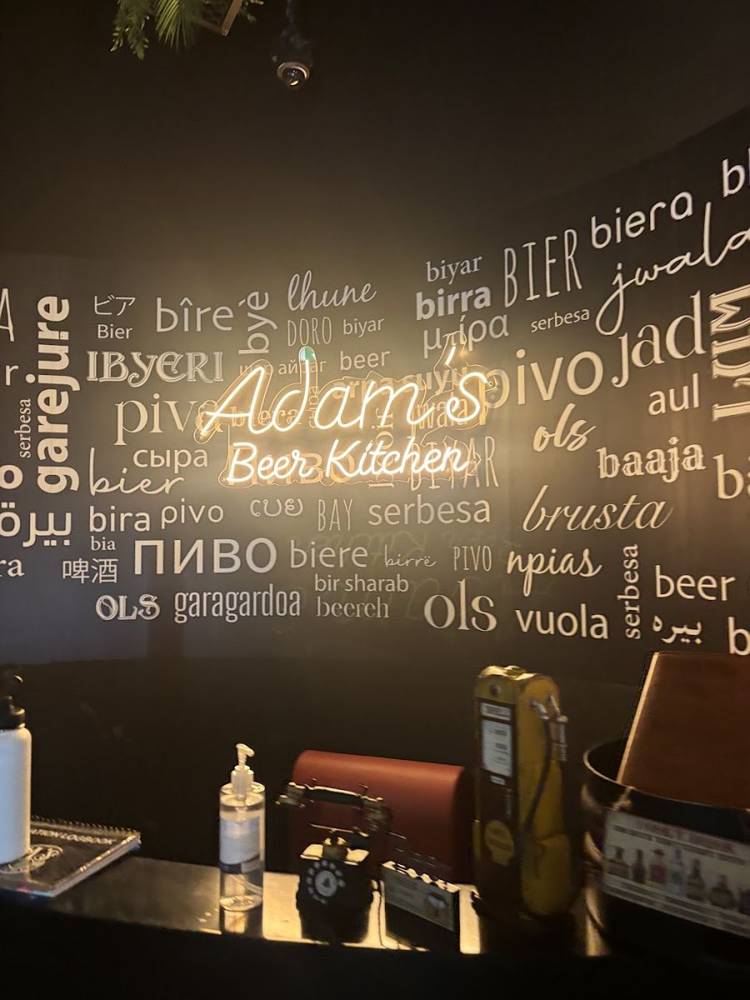

Our story
The original Adam's Beer Kitchen, on the ground floor of The Arc.

Adam's Beer Kitchen started on Al Reem Island, on the ground floor of The Arc, Tower C. Behind a fence of planters there's a covered beer garden, and inside there's a bar with a wall of bottles from around the world, two dartboards and screens for the football.
The idea was simple: an easy place to meet friends after work, watch the match, play a few rounds of darts and eat well. Big portions, cold pints and a team that remembers you. The quiz on Wednesday has become the island's midweek fixture.
It worked well enough that there are now three of us: this one, one at Al Forsan in Khalifa City and one in JVC, Dubai.
Meet the crew
The people behind the bar, as named by our guests in their reviews.
Sample profiles, photos and bios to be confirmed with the teamThe family
Three Adam's, each with its own crowd.
Save your seat
Send us a WhatsApp and the team will confirm your table. Big group? Tell us and we'll set it up.